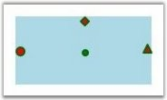

Several predefined shapes have been provided for the ports. They are,
· Arrow
· Circle
· Diamond
Table 46: Property Table
|
Property |
Description |
Type of the property |
Value it accepts |
Any other dependencies/ sub properties associated |
|
PortShape |
The PortShape property specifies the shape to be used for the port. Three types of shapes are provided: Arrow, Circle, Diamond.
Default Value: PortShapes.Diamond |
CLR property |
PortShapes.None PortShapes.Arrow PortShapes.Diamond PortShapes.Circle |
No |
The following code shows how a port shape can be selected for the port.
|
[C#]
Node node = new Node(Guid.NewGuid(), "Node1"); node.Shape = Shapes.RoundedSquare; node.Width = 150; node.Height = 50; node.OffsetX = 250; node.OffsetY = 100;
ConnectionPort port = new ConnectionPort(); port.Left = 50; port.Top = 0; port.Node = node; port.PortShape = PortShapes.Arrow; node.Ports.Add(port); diagramModel.Nodes.Add(node); |
|
[VB]
Dim node As New Node(Guid.NewGuid(), "Node1") node.Shape = Shapes.RoundedSquare node.Width = 150 node.Height = 50 node.OffsetX = 250 node.OffsetY = 100
Dim port As New ConnectionPort() port.Left = 50 port.Top = 0 port.Node = node port.PortShape = PortShapes.Arrow node.Ports.Add(port) diagramModel.Nodes.Add(node) |

Figure 95: Port Shapes